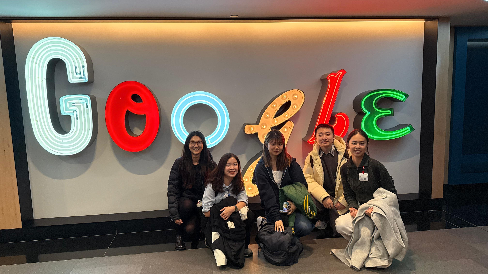
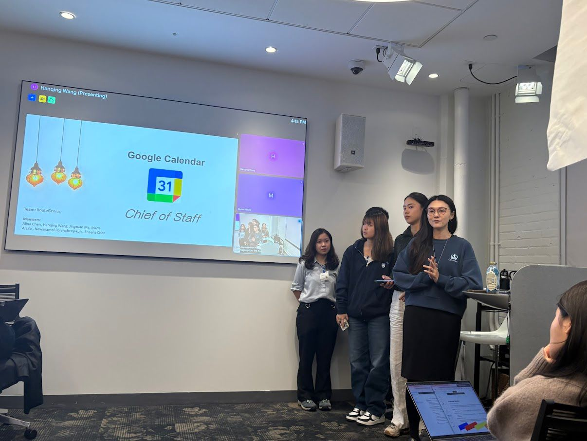
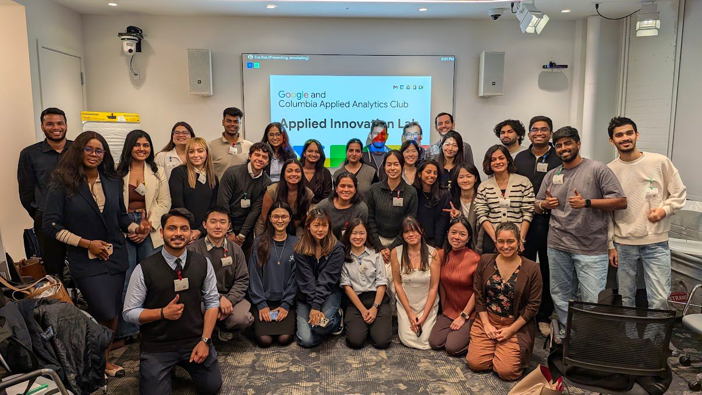

Product Strategy · AI Agent · Workspace Productivity
An AI agent inside Google Workspace that turns low-value meetings into async briefs — giving back 5+ hours/week to executives drowning in calendar inflation.

Team Chief of Staff — Hanqing, Nawa, Sheena, Jingxuan, Alina, Maria (Not here)

Presentation at the Google Innovation Lab

Columbia Applied Analytics Club
Goal
Executives spend 75% of their day in meetings — and most of those meetings could have been a doc. This project asks: can a context-aware AI agent inside Google Workspace turn low-value meetings into async work — and how would we know it's actually working?
Problem & solution
⚠ The Problem
Cross-functional leads spend 6 hours/day in meetings (75% of workday) and 1–2 hours just on scheduling — leaving only 2 hours for deep work. Calendar inflation drives executive burnout and puts multi-million-dollar targets at risk.
💡 The Solution
A "Chief of Staff" AI agent that detects meeting conflicts, generates async brief Docs to replace low-value meetings, and gives users back ~5 hours/week — all measured by three success metrics that define product-market fit.
The extreme user persona
Jessica
PMO Lead · Post-Merger Integration · Fortune 500
Cross-functional lead wearing two hats — Integration Team AND Supply Chain. Her calendar is a battlefield where teams compete for her time. The $200M annual sales target rides on her ability to coordinate across business and back office without burning out.
The intelligent async pivot
Identify & prioritize
AI analyzes Jessica's schedule, detects conflicts between meetings, and nudges her: "Conflict detected. Opt-out and auto-send a written brief instead?"
Securely retrieve context
RAG pulls from Google Workspace and Cloud Files — meeting agenda, prior threads, related Docs — to compose a context-aware brief.
Review & collaborate (human-in-the-loop)
Jessica reviews the draft Doc in ~2 min, edits, approves. The system auto-shares with all participants and cancels the meeting — collaboration continues asynchronously.
→ 2 min review · 30 min meeting saved · 100% context preserved
★ Success metrics — my contribution
A new AI feature is only as credible as the metrics that prove it works. I designed three measurement layers — product, value, and quality — that together tell us whether the agent is actually helping users.
Product Metric
Async Conversion Rate
ACR = async conversions ÷ eligible meetings
Target: 20–25%
% of low-value meetings the agent successfully converts into async (Docs, Gmail). Measured via calendar event cancellations and Doc/Gmail creation triggered by the agent.
User Value Metric
Hours Returned
Hours = SUM(minutes saved)
Target: +5 hrs/week per user
Number of hours the agent gives back by cancelling, shortening, or converting meetings. Measured via cancelled and shortened meeting durations.
Quality Metric
Override Rate
OR = user overrides ÷ agent actions
Target: < 5%
% of times users reverse, reject, or undo the agent — reinstating meetings, rejecting async replacements, or deleting generated Docs. Low rates mean the agent is trusted.
How the AI thinks · two-stream model
⚡ Structural
Graph Neural Networks
Workspace interaction graph
Detects relationships between sender and receiver across the workspace, calculates relationship scores, and identifies key stakeholders based on actual workflow dependencies.
🧠 Semantic
Gemini Embeddings
Cosine similarity vs OKRs
Vectorizes unstructured meeting agendas with Gemini Pro Embeddings and maps each meeting against the user's OKRs — quantifying topic relevance vs business objectives.
🔒 Privacy
Federated Learning
On-device processing
Relationship data is processed locally on the user's device. Enterprise privacy preserved by design — no sensitive workflow signals leave the user's environment.
Results · headline numbers
Hard-dollar ROI per user, measured by 3 layered success metrics — Async Conversion Rate (product), Hours Returned (value), and Override Rate (quality). Together they prove the agent isn't just shipping — it's actually helping.
Impact & outcome
How it works — technical overview
Detection
Conflict Identification
Calendar scan · meeting overlaps · low-value meeting flagging
Context
RAG over Workspace
Securely connects to Workspace + Cloud Files · pulls agenda, threads, Docs
Reasoning
GNN + Gemini
Structural stream (relationship scores) + semantic stream (cosine vs OKRs)
Output ✦
Brief Generation
Draft Doc · human-in-the-loop review · auto-share · meeting cancelled
| Component | Method | Output |
|---|---|---|
| Structural analysis | Graph Neural Networks on Workspace interaction graph | Stakeholder relationship scores |
| Semantic analysis | Gemini Pro Embeddings + Cosine Similarity | Meeting-to-OKR relevance scores |
| Privacy layer | Federated Learning · on-device computation | No sensitive workflow data leaves user environment |
Tech stack
Links